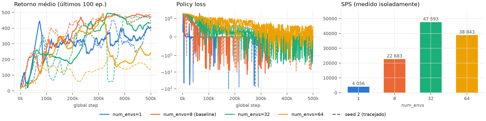
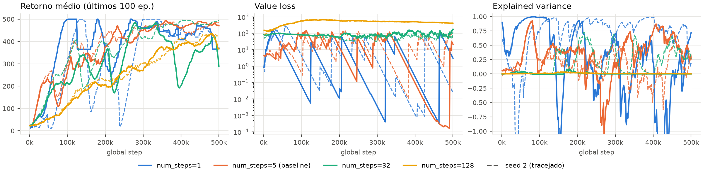
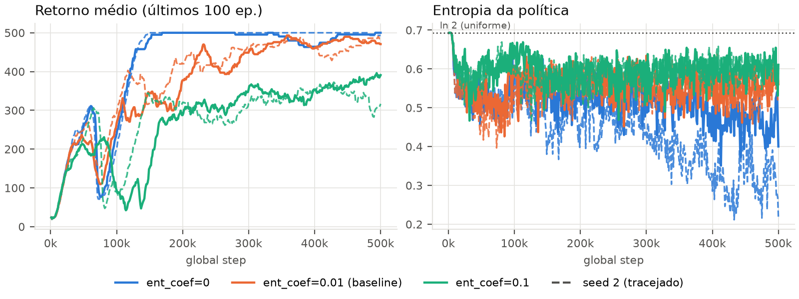
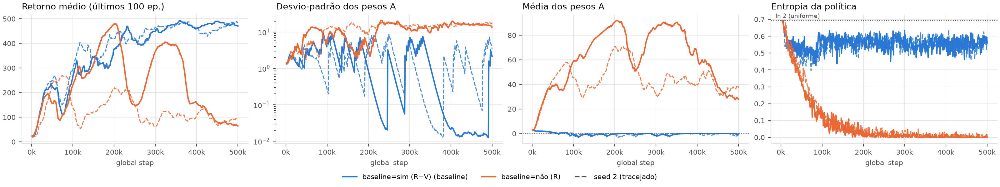
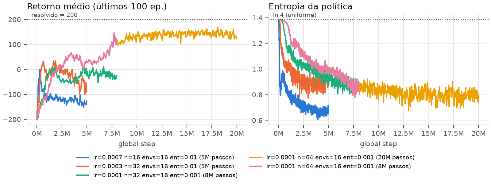

1. Retorno de n-passos com Bootstrap (algorithms/a2c.py): Acumulação retroativa de horizonte finito Rt = rt + γ(1 − dt)Rt+1, inicializada no passo terminal por RT = V(sT). A máscara booleana (1 − dt) interrompe estritamente a propagação nos limites dos episódios de forma desacoplada entre os ambientes.
2. Perda de Política e Isolamento de Gradientes: Perda Lπ = −1⁄B ∑ log π(ai|si) Ai, onde o peso de vantagem Ai = (Ri − V(si)).detach() é explicitamente desconectado do grafo computacional para impedir o vazamento espúrio de gradiente da política para o crítico.
3. Arquitetura Ator-Crítico Categórica (networks/discrete_actor_critic.py): Rede neural MLP com cabeças separadas parametrizando π(a|s) ∼ Categorical(logits) e função valor escalar V(s).
Configuração Base: configs/a2c_cartpole.yml (500k timesteps, 8 ambientes, n=5, lr=7×10−4, γ=0,99, cv=0,5, ce=0,01).
Reprodutibilidade Estocástica: Varreduras por --override executadas obrigatoriamente com 2 seeds independentes (Linha cheia = Seed 1; Tracejada = Seed 2).
Métricas & Isolamento: Retorno final reportado como a média dos últimos 20% do treinamento. A taxa de passos por segundo (SPS) foi aferida em execução isolada dedicada (200k passos sem concorrência de CPU) para eliminar distorções de contenção de hardware.
Aumentar o número de atores simultâneos em métodos on-policy quebra a dependência sequencial temporal das transições, reduzindo drasticamente a variância do estimador do gradiente de política e suprimindo o ruído de policy_loss. O paralelismo vetorial deve escalar o SPS até o limite de núcleos físicos da CPU. Contudo, como o tamanho do lote de cada atualização é B = num_envs × num_steps, valores excessivamente altos de num_envs reduzirão a quantidade de passos de gradiente executados dentro do orçamento fixo de 500k transições, desacelerando o aprendizado.

policy_loss (escala symlog) e taxa SPS aferida em isolamento físico por configuração de paralelismo.| num_envs | Lote (N×n) | Atualizações | Retorno Final (s1 / s2) | Eval Greedy (s1 / s2) | Desvio σ (policy_loss) | Pico Negativo | SPS Isolado | Run IDs (s1, s2) |
|---|---|---|---|---|---|---|---|---|
| 1 | 5 | 100.000 | 351 / 315 | 462 / 256 | 4,5 / 7,8 | −63 / −104 | 4.056 | 7zz8i4sv, tdw48yei |
| 8 (Baseline) | 40 | 12.500 | 478 / 461 | 500 / 482 | 1,4 / 1,3 | −14 / −10 | 22.683 | 5vukxjqp, q77wk364 |
| 32 | 160 | 3.125 | 417 / 469 | 500 / 375 | 0,74 / 0,84 | −3,6 / −5,0 | 47.593 | u1gors56, o1mbpzz8 |
| 64 | 320 | 1.562 | 221 / 159 | 267 / 167 | 0,57 / 0,46 | −1,8 / −0,3 | 38.843 | jikj7s7y, enq07wm0 |
| Controle: 1 env, n=40 | 40 | 12.500 | 386 / 405 | 454 / 298 | 11,2 / 9,7 | −54 / −72 | — | abqwmzce, vm06tqa6 |
Mecanismo de Descorrelação On-Policy: Algoritmos de gradiente de política on-policy não utilizam memória de replay; portanto, as amostras coletadas por um ator isolado são fortemente correlacionadas no tempo, representando um recorte microscópico e enviesado da dinâmica local do episódio. Isso explica os picos destrutivos de policy_loss observados com num_envs=1 (−63 e −104) e seu elevado desvio padrão (σ ≈ 7,8). Ao paralelizar atores em sincronia, cada ambiente ocupa uma região independente do espaço de estados, de modo que a agregação síncrona aproxima o gradiente amostrado de sua esperança matemática assintótica E[∇θ log πθ(a|s) A(s,a)], estabilizando a perda em uma faixa suave (σ ≈ 0,5 em 64 envs).
Isolamento Categórico: Volume do Lote vs. Independência Amostral: Uma ambiguidade teórica clássica é se o ganho de desempenho provém do aumento do lote (B = N × n) ou da independência das amostras. O run de controle (1 ambiente com n=40) soluciona essa questão: ele replica com exatidão o lote de 40 transições e as 12.500 atualizações do baseline (8 × 5), mas exibe o maior ruído de toda a série experimental (σ = 11,2) e estagnação no retorno (386–405 vs 461–478). Isso comprova que a virtude do A2C reside na descorrelação estocástica dos múltiplos pontos de partida, e não no mero volume bruto de dados. Em contrapartida, com 64 ambientes, a variância é mínima, mas o orçamento de 500k passos comporta apenas 1.562 atualizações, resultando em severo subajuste. O SPS atinge pico de 47.593 em 32 atores (aceleração de 11,7×), retraindo em 64 devido à sobrecarga de chaveamento de contexto no processador de 10 núcleos.
O horizonte n comanda o balanço clássico entre viés e variância. Em n=1, o alvo aproxima-se do bootstrap de 1 passo (r + γV), exibindo baixa variância mas viés máximo herdado dos erros do crítico. Em n=128, o alvo aproxima-se de Monte Carlo puro, livre de viés mas sujeito à dispersão cumulativa da trajetória, elevando a value_loss. Como a vantagem At = Rt − V(st) acopla diretamente o crítico ao ator, falhas no crítico devem desestabilizar o aprendizado da política.

value_loss (escala log) e dinâmica da variância explicada (EV) sob diferentes horizontes de rollout n.| num_steps | Lote | Retorno Final (s1 / s2) | Eval Greedy | Value Loss Mediana | EV Final (s1 / s2) | Média Pesos A | Desvio Pesos A | Run IDs (s1, s2) |
|---|---|---|---|---|---|---|---|---|
| 1 | 8 | 431 / 433 | 500 / 500 | ~0,00 | 0,26 / 0,90 | −0,25 / −0,12 | 0,70 / 0,36 | jj88rgp5, agglp2k7 |
| 5 (Baseline) | 40 | 478 / 461 | 500 / 482 | ~0,00 | 0,70 / 0,44 | −0,07 / −0,71 | 0,39 / 2,39 | 5vukxjqp, q77wk364 |
| 32 | 256 | 340 / 485 | 180 / 500 | 51 / 77 | 0,00 / 0,30 | 0,81 / 1,09 | 10,1 / 8,1 | immov8y6, dfms8aic |
| 128 | 1024 | 400 / 414 | 371 / 461 | 505 / 498 | 0,00 / 0,00 | 23,5 / 23,4 | 17,8 / 17,7 | tqwv3nh9, 9g7tdlj1 |
Propagação do Erro do Crítico ao Ator: Em n=128, a soma empírica de recompensas sem amortecimento por bootstrap infla drasticamente a variância do alvo, fazendo a value_loss explodir de ~0 para patamares superiores a 500. Esse erro destrói a calibração da vantagem: os pesos do gradiente passam a ter média espúria de +23,5 e desvio de 17,8 (contra média centrada em zero no baseline). Quando o crítico subestima sistematicamente os retornos, o peso da vantagem torna-se uniformemente positivo, reforçando qualquer ação executada e impedindo a diferenciação relativa exigida pela subida de gradiente.
A Armadilha Analítica da Explained Variance em Micro-Lotes: Em n=1, a seed 2 registra EV = 0,90, aparentando excelência estatística. Trata-se de uma armadilha métrica: com N=8 e n=1, o lote possui apenas 8 transições altamente redundantes cujos alvos r + γV(s') foram sintetizados pela própria rede de valor naquele mesmo instante. Explicar a variância de amostras autorreferenciadas e colineares é matematicamente trivial e não reflete acurácia preditiva sobre o valor real do estado. Já em n ≥ 32, a EV estaciona em 0,00 porque, com o bastão estabilizado, as trajetórias alcançam retornos homogêneos; a variância do denominador Var(y) colapsa para zero, tornando a métrica analiticamente instável.
O bônus de entropia impede que a política colapse prematuramente em ações determinísticas antes da exploração do espaço. Um coeficiente excessivo (0,1) fará o termo −βH(π) dominar a função de perda, travando a entropia próxima da distribuição uniforme (ln 2 ≈ 0,693) e impedindo o equilíbrio fino. Com coeficiente nulo (0), a política deve convergir rapidamente no CartPole devido à extrema simplicidade e densidade de seu sinal de reforço.

| ent_coef | Retorno Final (s1 / s2) | Eval Greedy (s1 / s2) | 1º Passo com Retorno ≥ 450 | Entropia Final (s1 / s2) | Run IDs (s1, s2) |
|---|---|---|---|---|---|
| 0 (Sem Bônus) | 489 / 499 | 500 / 500 | 129k / 131k | 0,47 / 0,31 | 4223izo4, dsyhmjsz |
| 0,01 (Baseline) | 478 / 461 | 500 / 482 | 228k / 274k | 0,55 / 0,55 | 5vukxjqp, q77wk364 |
| 0,1 (Excessivo) | 368 / 340 | 357 / 425 | Nunca Atingiu | 0,60 / 0,60 | 34521kv7, ue9iv084 |
Mecanismo de Degradação por Estocasticidade Forçada: Em ent_coef=0.1, a entropia estabiliza-se rigidamente em 0,60 durante todo o treino. A maximização da desordem supera o incentivo de ganho de recompensa, impedindo que os logits convirjam para distribuições assertivas. Em estados limítrofes de tombamento do bastão, a política injeta perturbações aleatórias que abortam prematuramente o episódio, estagnando o retorno médio em 340–368 e impedindo o cumprimento da meta de 450.
A Benevolência Estrutural do CartPole: Com ent_coef=0, a política reduz livremente sua entropia para 0,31–0,47 e atinge o limiar de excelência (≥ 450) em apenas 129k passos — duas vezes mais rápido que o baseline. O CartPole permite aprendizado perfeito mesmo sem entropia porque conjuga três propriedades favoráveis: (i) espaço de ação binário (|A| = 2, onde um colapso acidental ainda retém 50% de chance de correção); (ii) recompensas densas e imediatas (+1 por passo); e (iii) terminação no erro com crédito local imediato. Em domínios complexos com recompensas esparsas ou múltiplos graus de liberdade (como LunarLander com |A| = 4 ou Montezuma's Revenge), ent_coef=0 provoca colapso irreversível em bacias de atração subótimas antes da descoberta da recompensa.
Subtrair uma linha de base independente da ação não altera a esperança matemática do gradiente de política (Ea∼π[∇θ log πθ(a|s) V(s)] = 0), mas atua como operador crucial de redução de variância. Sem baseline (w = R), a variância dos pesos deve explodir. Dado que as recompensas no CartPole são estritamente positivas (rt = +1 ⇒ R > 0), todo gradiente impulsionará a probabilidade da ação sorteada, deflagrando um ciclo de feedback positivo que colapsará a entropia para zero e paralisará o aprendizado.

| use_baseline | Retorno Final (s1 / s2) | Eval Greedy (s1 / s2) | Média Pesos A (Fim) | Desvio Pesos A (Fim) | Entropia Final (s1 / s2) | Policy Loss Mínima | Run IDs (s1, s2) |
|---|---|---|---|---|---|---|---|
| Sim — R − V(s) (Baseline) | 478 / 461 | 500 / 482 | −0,07 / −0,71 | 0,39 / 2,39 | 0,55 / 0,55 | −14 / −10 | 5vukxjqp, q77wk364 |
| Não — R (Ablação REINFORCE) | 98 / 97 | 57 / 95 | 39,2 / 39,5 | 16,1 / 16,3 | 0,004 / 0,007 | 0,0 / 0,0 | kiwifws0, 9ogc2rkl |
Validação Empírica da Redução de Variância: Os resultados empíricos confirmam o postulado teórico de Williams: o baseline preserva a média empírica centrada em zero (μ ≈ −0,39), enquanto sem baseline a média salta para +39,3 e o desvio padrão cresce entre 7 e 41 vezes (σ = 16,2 vs 0,39). Sem a âncora de V(s), o estimador do gradiente torna-se excessivamente ruidoso, exigindo volumes impraticáveis de dados para que a direção ótima de ascensão emerja.
O Fenômeno do Colapso por Realimentação Positiva: No CartPole, o retorno empírico R é invariavelmente positivo (R ∈ [1, 500]). Como consequência, o termo de perda −log π(a|s) · R é estritamente côncavo e a policy_loss atinge mínimo idêntico a 0,0 (jamais negativando, ao passo que com baseline atinge −14). Sob pesos estritamente positivos, toda ação amostrada tem sua probabilidade incrementada. A única via de declínio de uma ação inferior é ser selecionada menos vezes que a alternativa. Isso dispara uma realimentação viciosa: a ação ligeiramente mais frequente no início é ainda mais reforçada até monopolizar a distribuição categórica. A entropia colapsa instantaneamente para 0,004 (determinismo espúrio), paralisando o retorno médio em pífios 57–95.

| Configuração Paramétrica Investigada | Timesteps | Pico de Retorno | Retorno Final (Treino) | Eval Greedy (10 Ep.) | Entropia Final |
|---|---|---|---|---|---|
| lr 7e-4, n=16, 16 envs, ent 0,01 (Transposição Direta CartPole) | 5M | 4 | −126 | −112 | 0,72 |
| lr 3e-4, n=32, 16 envs, ent 0,01 | 5M | 39 | −92 | −36 | 0,87 |
| lr 1e-4, n=32, 16 envs, ent 0,001 | 8M | 12 | −23 | −9 | 0,93 |
| lr 1e-4, n=32, 16 envs, ent 0 (Sem Regularização) | 8M | 14 | −42 | −54 | 0,90 |
| lr 1e-4, n=64, 16 envs, ent 0,001 | 8M | 151 | 115 | 19 | 0,82 |
| lr 1e-4, n=64, 16 envs, ent 0,001 (Treino Estendido) | 20M | 174 | 121 | 157 ± 106 | 0,66 |
Diagnóstico Rigoroso dos Gargalos e Desempenho Quase-Resolvido: A transposição ingênua dos parâmetros do CartPole colapsa catastroficamente para −126 devido à amplitude de recompensa (−400 a +250) e termo terminal de impacto (±100). A estabilização exigiu amortecimento da taxa de aprendizado (lr → 1×10−4), expansão do horizonte (n=64, permitindo propagar o sinal terminal sem depender de dezenas de bootstraps ruidosos) e compressão da entropia (0,001, essencial para mitigar o desperdício de combustível). Na melhor configuração com 20M passos, a política atinge 157 ± 106 na avaliação greedy. A análise dos 10 episódios revela que 6 episódios obtiveram pouso perfeito com retornos entre 201 e 240, 2 colidiram e 1 desceu fora do centro. A meta média de 200 não foi atingida em virtude de três limitações intrínsecas: (1) Ausência de GAE e Normalização de Vantagem: sem decaimento λ nem padronização em batch, episódios de queda (−400) geram choques de gradiente desproporcionais; (2) Ineficiência Amostral On-Policy: o A2C executa apenas uma etapa de descida por lote e descarta os dados, necessitando de ordens de magnitude a mais de interação que métodos off-policy ou PPO; e (3) Exploração Residual: a entropia decaiu para 0,66 (de um teto de 1,39); acelerar esse decaimento manualmente (ent_coef=0) causou colapso prematuro (−42).